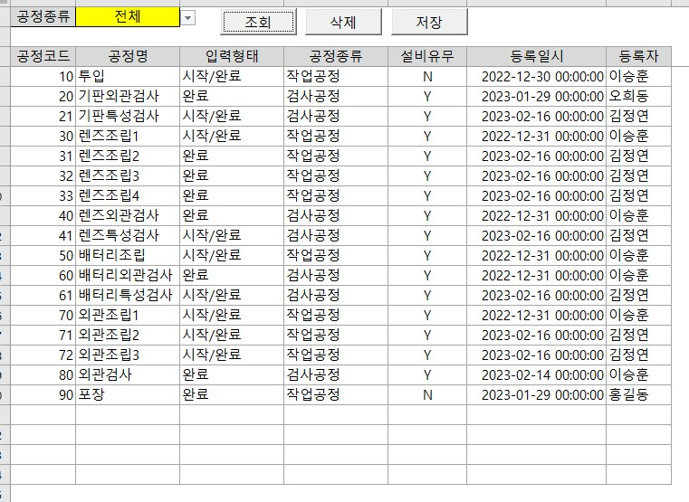

MS-SQL Server MESDB_CREATE.sql (테이블 DDL 및 저장 프로시저)과 Excel VBA 클라이언트 MES_Process.cls 간의 완전한 상호작용 및 UI/트랜잭션 분석
MES_Process 화면은 생산 라인의 표준 공정 코드(투입, 외관검사, 조립, 특성검사, 포장 등)와 각 공정별 입력형태(시작/완료), 공정종류(작업공정/검사공정), 설비유무(Y/N)를 관리하는 기준정보(Master Data) 입력/조회 인터페이스입니다.

| 구분 | 엑셀 셀 주소 | 명명된 범위 (Name) | 연계 DB 컬럼 / 컨트롤 설명 |
|---|---|---|---|
| 조회 조건 | B1 | Range("WORK") | 공정종류 필터 (드롭다운 목록: "전체,작업공정,검사공정") |
| ActiveX 버튼 | 상단 행 | cmdDisplay, cmdDelete, cmdSave | [조회] 쿼리 실행, [삭제] 취소선 토글, [저장] 일괄 트랜잭션 반영 |
| 데이터 영역 | A3:G25 | Range("DATA") | 공정 레코드 데이터 그리드 (A3 시작) |
| 컬럼 1 (A열) | DATA.Columns(1) | - | dbo.Process.Process (공정코드 - smallint, PK) |
| 컬럼 2 (B열) | DATA.Columns(2) | - | dbo.Process.Name (공정명 - varchar(50)) |
| 컬럼 3 (C열) | DATA.Columns(3) | - | dbo.Process.Work (입력형태 - 공통코드 'Process.Work' 드롭다운) |
| 컬럼 4 (D열) | DATA.Columns(4) | - | dbo.Process.Type (공정종류 - 공통코드 'Process.Type' 드롭다운) |
| 컬럼 5 (E열) | DATA.Columns(5) | - | dbo.Process.MachineFlag (설비유무 - 'Y,N' 드롭다운) |
| 컬럼 6 (F열) | DATA.Columns(6) | - | dbo.Process.EventTime (등록일시 - DateTime.Now(), yyyy-mm-dd hh:mm:ss) |
| 컬럼 7 (G열) | DATA.Columns(7) | - | dbo.Process.EventUser (등록자 - MES_Master.Range("WORKER")) |
MESDB_CREATE.sql에 정의된 공정 기준정보 테이블 및 3대 핵심 저장 프로시저의 DDL과 내부 로직 분석입니다.
CREATE TABLE [dbo].[Process](
[Process] [smallint] NOT NULL, -- 공정코드 (Primary Key)
[Name] [varchar](50) NOT NULL, -- 공정명 (투입, 기판외관검사 등)
[Work] [varchar](50) NOT NULL, -- 작업형태 (시작/완료, 완료)
[Type] [varchar](50) NOT NULL, -- 공정종류 (작업공정, 검사공정)
[MachineFlag] [char](1) NOT NULL, -- 설비유무 (Y, N)
[EventTime] [datetime] NOT NULL, -- 최근 등록/수정 일시
[EventUser] [varchar](50) NOT NULL, -- 최근 등록/수정 작업자
CONSTRAINT [PK_Process] PRIMARY KEY CLUSTERED ([Process] ASC)
) ON [PRIMARY]상단 필터 @Gubun이 '전체'이면 전체 공정을 조회하고, 특정 공정구분(예: '작업공정')이면 해당 구분만 필터링 조회합니다.
CREATE PROCEDURE [dbo].[Process_Select](
@Gubun varchar(50)
)
AS
BEGIN
SET NOCOUNT ON
IF @Gubun = '전체'
SELECT * FROM dbo.Process WITH(NOLOCK)
ELSE
SELECT * FROM dbo.Process WITH(NOLOCK) WHERE Type = @Gubun
RETURN 0
END공통코드 유효성(Code 테이블의 Process.Work, Process.Type)을 검증하고, 이미 존재하는 공정코드면 UPDATE, 신규면 INSERT를 수행하는 UPSERT 트랜잭션입니다.
CREATE PROCEDURE [dbo].[Process_Save](
@Process smallint,
@Name varchar(50),
@Work varchar(50),
@Type varchar(50),
@MachineFlag nchar(1),
@EventTime as datetime,
@EventUser varchar(50) = 'SYSTEM'
)
AS
BEGIN
SET NOCOUNT ON
DECLARE @CurrentTime datetime
SET @CurrentTime = GETDATE()
-- 1. Work 유효성 검증
SELECT Code FROM dbo.Code WHERE keyID = 'Process.Work' AND [name] = @Work
IF @@ROWCOUNT = 0
BEGIN
RAISERROR('dbo.Process_Save : Work 오류 [Work = %s]', 16, -1, @Work)
RETURN -10
END
-- 2. Type 유효성 검증
SELECT Code FROM dbo.Code WHERE keyID = 'Process.Type' AND [name] = @Type
IF @@ROWCOUNT = 0
BEGIN
RAISERROR('dbo.Process_Save : Type 오류 [Type = %s]', 16, -1, @Type)
RETURN -20
END
-- 3. UPSERT 분기 처리
IF (SELECT COUNT(*) FROM dbo.Process WHERE Process = @Process) = 0
INSERT INTO dbo.Process VALUES(@Process, @Name, @Work, @Type, @MachineFlag, @CurrentTime, @EventUser);
ELSE
UPDATE dbo.Process
SET [Name] = @Name,
Work = @Work,
[Type] = @Type,
MachineFlag = @MachineFlag,
EventTime = @CurrentTime,
EventUser = @EventUser
WHERE Process = @Process
RETURN 0
END공정코드(Primary Key)를 매개변수로 받아 해당 공정 레코드를 물리 삭제합니다.
CREATE PROCEDURE [dbo].[Process_Delete](
@Process smallint
)
AS
BEGIN
SET NOCOUNT ON
DELETE FROM dbo.Process
WHERE Process = @Process
IF @@ROWCOUNT = 0
BEGIN
RAISERROR('dbo.Process_Delete : 삭제 오류 [Process = %d]', 16, -1, @Process)
RETURN -10
END
RETURN 0
ENDRangeCode_Set을 통해 공통코드 드롭다운 콤보 유효성 검사 설정 및 상태배열 sDataList() 크기 할당SelectToRange로 dbo.Process_Select 결과셋을 Range("DATA")에 복사하고 기존 취소선 해제 및 배열 초기화AutoChangeValue로 수정일시/작업자 자동 갱신 및 필수입력 검사 후 sDataList(row) = "SAVE" 지정DeleteLine_Create)을 시각화하고 sDataList(row) = "DELETE" 토글"DELETE" 행은 Process_Delete, "SAVE" 행은 Process_Save를 실행하고 자동 재조회Private Const ThisModuleVersion As Integer = 1
Option Explicit '변수가 지정되지 않으면 에러가 나도록 정의
Private sDataList() As String 'Sheet에서 내용을 수정하면 어느행이 수정되었는지 저장
'개발시 변경해야할 위치
Private Const QUERY_SELECT As String = "dbo.Process_Select"
Private Const QUERY___SAVE As String = "dbo.Process_Save"
Private Const QUERY_DELETE As String = "dbo.Process_Delete"
'선택 쿼리 실행시 파라메터
Private Function QuerySelectParameter() As String
QuerySelectParameter = "'" + Range("WORK").value + "'"
End Function
'삭제 쿼리 실행시 파라메터
Private Function QueryDeleteParameter(iRownumber As Long) As String
QueryDeleteParameter = "'" + Range("DATA").Cells(iRownumber, 1).text + "'"
End Function
'Sheet의 값이 바뀌면 자동으로 변경할 값 정의 (등록일시, 등록자)
Private Sub AutoChangeValue(iRownumber As Long)
Range("DATA").Cells(iRownumber, 6).value = DateTime.Now()
Range("DATA").Cells(iRownumber, 7).value = MES_Master.Range("WORKER").text
End Sub
'실행전 초기화 해야할 변수
Private Sub Worksheet_Activate()
Static bInitflag As Boolean
If bInitflag = False Then
'배열변수의 크기를 재조정
ReDim sDataList(Range("DATA").Rows.Count)
'코드정보를 Sheet에 목록형태로 입력제약을 걸어준다.
Call RangeCode_Set(Range("DATA").Columns(3), CodeList_Select("Process.Work"))
Call RangeCode_Set(Range("DATA").Columns(4), CodeList_Select("Process.Type"))
Call RangeCode_Set(Range("DATA").Columns(5), "Y,N")
Call RangeCode_Set(Range("WORK"), "전체," & Range("DATA").Columns(4).Validation.Formula1)
bInitflag = True
End If
End Sub기존 화면의 취소선을 제거하고, dbo.Process_Select '전체'를 실행하여 Range("DATA")에 바인딩합니다.
Private Sub cmdDisplay_Click()
Dim sSQL As String
'취소선 삭제
Call DeleteLine_Cancel(Range("DATA"))
'Data를 가져오기 위한 저장 프로시져 호출 Query를 만든다.
sSQL = QUERY_SELECT + " " + QuerySelectParameter()
'저장 프로시져를 호출하고 결과를 Excel Sheet에 출력한다.
Call SelectToRange(sSQL, Range("DATA"))
'조회를 다시한 경우에는 배열을 초기화하여 지정된 DELETE/SAVE 를 없앤다.
ReDim sDataList(Range("DATA").Rows.Count)
'날짜컬럼의 표시형식 변경
Call DateFromatSet(Range("DATA").Columns(6))
End Sub'삭제조회 버튼이 눌러지면 실행되는 이벤트
Private Sub cmdDelete_Click()
Dim iDataRow As Long
'Sheet에서 Data범위 내의 Data가 변경되었는지 확인
If Change_Check(ActiveCell, Range("DATA")) Then
iDataRow = ActiveCell.Row - Range("DATA").Row + 1
If sDataList(iDataRow) = "DELETE" Then
'이미 삭제되어 있으면 삭제 취소
sDataList(iDataRow) = ""
Call DeleteLine_Cancel(Range("DATA").Rows(iDataRow))
Else
'Data범위 내면 변수에 DELETE 지정 및 빨간색 취소선 설정
sDataList(iDataRow) = "DELETE"
Call DeleteLine_Create(Range("DATA").Rows(iDataRow))
End If
End If
End Sub
'저장조회 버튼이 눌러지면 실행되는 이벤트
Private Sub cmdSave_Click()
Dim iDataRow As Long
Dim sSQL As String
For iDataRow = 1 To Range("DATA").Rows.Count
If sDataList(iDataRow) = "DELETE" Then
'취소선 삭제 후 삭제 쿼리 실행
Call DeleteLine_Cancel(Range("DATA").Rows(iDataRow))
sSQL = QUERY_DELETE + " " + QueryDeleteParameter(iDataRow)
Call ExecCmd(sSQL)
ElseIf sDataList(iDataRow) = "SAVE" Then
'저장인 경우 호출할 명령 지정 (DataList_Create로 파라미터 직렬화)
sSQL = QUERY___SAVE + " " + DataList_Create(Range("DATA").Rows(iDataRow))
Call ExecCmd(sSQL)
End If
'첫번째 열(공정코드)이 공백이면 배열의 끝까지 가지 않고 조기 종료
If Range("DATA").Cells(iDataRow, 1) = "" Then
Exit For
End If
Next
'저장 완료 후 화면 강제 재조회
Call cmdDisplay_Click
End Sub'Cell에서 Data수정이 발생하면 실행되는 Event
Private Sub Worksheet_Change(ByVal Target As Range)
Dim iDataRow As Long
'Sheet에 Data를 뿌리는 중이면 바로 빠져나감.
If Application.ScreenUpdating = False Then
Exit Sub
End If
'3행 이후의 Data가 변경되었는지 확인
If Change_Check(Target, Range("DATA")) Then
iDataRow = Target.Row - Range("DATA").Row + 1
'수정에 의한 무한 루프를 방지한다
Application.ScreenUpdating = False
Call AutoChangeValue(iDataRow)
Application.ScreenUpdating = True
'변경된 Data행에 필수 Data가 모두 입력되었는지 확인 후 SAVE 마킹
If AllDataInput_Check(Range("DATA").Rows(iDataRow)) Then
sDataList(iDataRow) = "SAVE"
End If
End If
End Sub